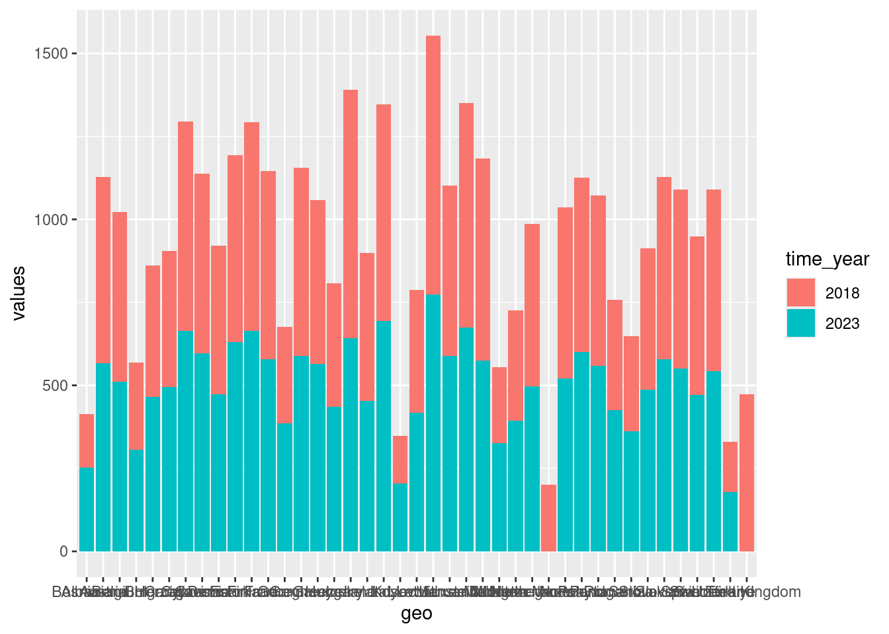

5 Exploration von kategorialen Daten
- Kategoriale Variablen in Faktor umwandeln
- Kategoriale Variablen darstellen
- Neue Variablen mit
mutate()erstellen - Häufigkeits- und Kontingenztabellen erstellen
5.1 Mobilität in Europa
Wir nutzen erneut den Datensatz aus der ersten Sitzung der Vorlesung. Zunächst laden wir wie immer die nötigen Bibliotheken.
library(tidyverse)Das Einlesen eines Datensatzes aus einer Textdatei haben Sie ja bereits im letzten Kapitel gelernt.
car_numbers <- read_delim(file = 'Daten/autos_2022-11-06.csv', delim = ';')Rows: 76 Columns: 4
── Column specification ────────────────────────────────────────────────────────
Delimiter: ";"
chr (2): geo, unit
dbl (1): values
date (1): time
ℹ Use `spec()` to retrieve the full column specification for this data.
ℹ Specify the column types or set `show_col_types = FALSE` to quiet this message.5.1.1 Kategoriale Variablen als Faktoren
Wir sehen uns das tibble etwas genauer an.
car_numbersKategorische Variablen werden als Text (character) eingelesen. Das bedeutet, dass wir R nicht (so leicht) fragen können, welche verschiedenen Merkmalsausprägungen die Variable enthält. Eine bessere Klasse für eine kategoriale Variable ist ein Faktor (factor). Bei einem Faktor werden die unterschiedlichen Merkmalsausprägungen (levels) explizit gespeichert. Wir wandeln daher die Text-Variable geo in einen Faktor um.
car_numbers <- car_numbers %>%
mutate(geo_factor = as_factor(geo))Die Funktion mutate() kann neue Variablen in einem Datensatz erstellen, verändern oder löschen. In unserem Fall erstellen wir eine neue Variable, die wir geo_factor nennen. Die Funktion as_factor() wandelt (konvertiert) die Text-Variable geo in einen Faktor. Die Funktion mutate() fügt neue Variablen am Ende des tibbles ein:
car_numbersNun können wir R auch fragen, welche verschiedene Merkmalsausprägungen (levels) diese Variable enthält:
levels(car_numbers$geo_factor) [1] "Albania" "Austria" "Belgium" "Bulgaria"
[5] "Croatia" "Cyprus" "Czechia" "Denmark"
[9] "Estonia" "Finland" "France" "Germany"
[13] "Greece" "Hungary" "Iceland" "Ireland"
[17] "Italy" "Kosovo" "Latvia" "Liechtenstein"
[21] "Lithuania" "Luxembourg" "Malta" "Montenegro"
[25] "Netherlands" "North Macedonia" "Norway" "Poland"
[29] "Portugal" "Romania" "Serbia" "Slovakia"
[33] "Slovenia" "Spain" "Sweden" "Switzerland"
[37] "Türkiye" "United Kingdom" Die einzlenen Merkmalsausprägungen sind die verschiedenen Ländern. Der Datensatz enthält 38 unterschiedliche Länder.
5.1.2 Balkendiagramm mit geom_col()
Wir möchten die Daten als Balkendiagramm darstellen. Das Ziel ist eine ähnliche Darstellung, wie in der Vorlesung.
Dazu müssen wir zuerst eine neue Variable erstellen, die wir zum Einfärben der Jahre nutzen können. Dazu benötigen wir eine zusätzliche Bibliothek, du uns den Umgang mit Datum und Uhrzeit erleichtert. Sie heißt lubridate.
library(lubridate)Nun nutzen wir die Funktion year() aus lubridate, um aus der Variablen time nur das Jahr zu extrahieren. Wir erstellen dazu mit mutate() wieder einen neue Variable, die wir time_year nennen.
car_numbers <- car_numbers %>%
mutate(time_year = year(time))Auch diese Variable wir an das Ende des Datensatzes car_numbers gestellt.
car_numbersEine Variable zum Einfärben mit zwei verschiedenen Farben (je Jahr eine andere Farbe) muss kategorial sein. Die Variable time_year ist aber numerisch. Daher nutzen wir mutate(), um time_year in einen Faktor zu verwandeln.
car_numbers <- car_numbers %>%
mutate(time_year = as_factor(time_year))In diesem Fall erstellt mutate() keine neue Variable, sondern überschreibt (verändert) die vorhandene Variable time_year. Das ist möglich und gängige Praxis in R. Jetzt ist time_year ein Faktor, was man auch in der Darstelung des tibble sehen kann.
car_numbersNun geht es an die Darstellung. Im Kapitel Chapter 3 haben Sie das geom_bar() kennengelernt. Es kann die Anzahl der Einträge in einer Variablen auszählen und diese als Balkendiagramm darstellen. Das möchten wir aber in unserem Fall nicht. Wir wollen die Anzahl der Autos darstellen, die in der Variablen value enthalten ist. In anderen Worten, wir wollen Werte und keine ausgezählten Merkmalsausprägungen (counts) darstellen. Das ist die Aufgabe des geom_col() (col steht für columns, also Säulen/Balken).
ggplot(data = car_numbers, mapping = aes(x = geo, y = values, fill = time_year)) +
geom_col()
Es ist noch etwas Nacharbeit nötig. Sieht man in die Hilfe von geom_col(), dann kann man nachlesen, dass es standardmäßig ein Stapelbalkendiagramm darstellt (stacked bar plot ). Möchte man die Balken nebeneinander haben (dodged bar plot), muss man das explizit sagen.
Die Ländernamen erscheinen (wie es Standard ist) horizontal. In unserem Fall überdecken sie sich aber und wir sollten sie vertikal schreiben. Dazu gibt es eine neue Funktion aus ggplot2, die wie alle anderen mit einem + angehängt wird. Sie heißt theme(). Der Parameter, der die einzelnen
ggplot(data = car_numbers, mapping = aes(x = geo, y = values, fill = time_year)) +
geom_col(position = position_dodge()) +
theme(axis.text.x = element_text(angle = 90, hjust = 1, vjust = 0.5))Warning: Removed 3 rows containing missing values (geom_col).
5.2 Lending Club – Peer-to-Peer-Kredite
Lending Club: Ein US-Unternehmen, das Individuen über eine Plattform ermöglicht, an andere Individuen Geld zu verleihen (Peer-to-Peer-Kredite). Wir haben den Datensatz bereits in der Vorlesung kennengelernt. Er ist in der Bibliothek openintro als loands_full_schema zu finden. Wir laden die Bibliothek und holen uns den Datensatz.
# Das R-Paket (auch Bibliothek genannt) laden
library(openintro)
# Datensatz laden
data(loans_full_schema)
# Datensatz ansehen
glimpse(loans_full_schema)Rows: 10,000
Columns: 55
$ emp_title <chr> "global config engineer ", "warehouse…
$ emp_length <dbl> 3, 10, 3, 1, 10, NA, 10, 10, 10, 3, 1…
$ state <fct> NJ, HI, WI, PA, CA, KY, MI, AZ, NV, I…
$ homeownership <fct> MORTGAGE, RENT, RENT, RENT, RENT, OWN…
$ annual_income <dbl> 90000, 40000, 40000, 30000, 35000, 34…
$ verified_income <fct> Verified, Not Verified, Source Verifi…
$ debt_to_income <dbl> 18.01, 5.04, 21.15, 10.16, 57.96, 6.4…
$ annual_income_joint <dbl> NA, NA, NA, NA, 57000, NA, 155000, NA…
$ verification_income_joint <fct> , , , , Verified, , Not Verified, , ,…
$ debt_to_income_joint <dbl> NA, NA, NA, NA, 37.66, NA, 13.12, NA,…
$ delinq_2y <int> 0, 0, 0, 0, 0, 1, 0, 1, 1, 0, 0, 0, 0…
$ months_since_last_delinq <int> 38, NA, 28, NA, NA, 3, NA, 19, 18, NA…
$ earliest_credit_line <dbl> 2001, 1996, 2006, 2007, 2008, 1990, 2…
$ inquiries_last_12m <int> 6, 1, 4, 0, 7, 6, 1, 1, 3, 0, 4, 4, 8…
$ total_credit_lines <int> 28, 30, 31, 4, 22, 32, 12, 30, 35, 9,…
$ open_credit_lines <int> 10, 14, 10, 4, 16, 12, 10, 15, 21, 6,…
$ total_credit_limit <int> 70795, 28800, 24193, 25400, 69839, 42…
$ total_credit_utilized <int> 38767, 4321, 16000, 4997, 52722, 3898…
$ num_collections_last_12m <int> 0, 0, 0, 0, 0, 0, 0, 0, 0, 0, 0, 0, 0…
$ num_historical_failed_to_pay <int> 0, 1, 0, 1, 0, 0, 0, 0, 0, 0, 1, 0, 0…
$ months_since_90d_late <int> 38, NA, 28, NA, NA, 60, NA, 71, 18, N…
$ current_accounts_delinq <int> 0, 0, 0, 0, 0, 0, 0, 0, 0, 0, 0, 0, 0…
$ total_collection_amount_ever <int> 1250, 0, 432, 0, 0, 0, 0, 0, 0, 0, 0,…
$ current_installment_accounts <int> 2, 0, 1, 1, 1, 0, 2, 2, 6, 1, 2, 1, 2…
$ accounts_opened_24m <int> 5, 11, 13, 1, 6, 2, 1, 4, 10, 5, 6, 7…
$ months_since_last_credit_inquiry <int> 5, 8, 7, 15, 4, 5, 9, 7, 4, 17, 3, 4,…
$ num_satisfactory_accounts <int> 10, 14, 10, 4, 16, 12, 10, 15, 21, 6,…
$ num_accounts_120d_past_due <int> 0, 0, 0, 0, 0, 0, 0, NA, 0, 0, 0, 0, …
$ num_accounts_30d_past_due <int> 0, 0, 0, 0, 0, 0, 0, 0, 0, 0, 0, 0, 0…
$ num_active_debit_accounts <int> 2, 3, 3, 2, 10, 1, 3, 5, 11, 3, 2, 2,…
$ total_debit_limit <int> 11100, 16500, 4300, 19400, 32700, 272…
$ num_total_cc_accounts <int> 14, 24, 14, 3, 20, 27, 8, 16, 19, 7, …
$ num_open_cc_accounts <int> 8, 14, 8, 3, 15, 12, 7, 12, 14, 5, 8,…
$ num_cc_carrying_balance <int> 6, 4, 6, 2, 13, 5, 6, 10, 14, 3, 5, 3…
$ num_mort_accounts <int> 1, 0, 0, 0, 0, 3, 2, 7, 2, 0, 2, 3, 3…
$ account_never_delinq_percent <dbl> 92.9, 100.0, 93.5, 100.0, 100.0, 78.1…
$ tax_liens <int> 0, 0, 0, 1, 0, 0, 0, 0, 0, 0, 0, 0, 0…
$ public_record_bankrupt <int> 0, 1, 0, 0, 0, 0, 0, 0, 0, 0, 1, 0, 0…
$ loan_purpose <fct> moving, debt_consolidation, other, de…
$ application_type <fct> individual, individual, individual, i…
$ loan_amount <int> 28000, 5000, 2000, 21600, 23000, 5000…
$ term <dbl> 60, 36, 36, 36, 36, 36, 60, 60, 36, 3…
$ interest_rate <dbl> 14.07, 12.61, 17.09, 6.72, 14.07, 6.7…
$ installment <dbl> 652.53, 167.54, 71.40, 664.19, 786.87…
$ grade <fct> C, C, D, A, C, A, C, B, C, A, C, B, C…
$ sub_grade <fct> C3, C1, D1, A3, C3, A3, C2, B5, C2, A…
$ issue_month <fct> Mar-2018, Feb-2018, Feb-2018, Jan-201…
$ loan_status <fct> Current, Current, Current, Current, C…
$ initial_listing_status <fct> whole, whole, fractional, whole, whol…
$ disbursement_method <fct> Cash, Cash, Cash, Cash, Cash, Cash, C…
$ balance <dbl> 27015.86, 4651.37, 1824.63, 18853.26,…
$ paid_total <dbl> 1999.330, 499.120, 281.800, 3312.890,…
$ paid_principal <dbl> 984.14, 348.63, 175.37, 2746.74, 1569…
$ paid_interest <dbl> 1015.19, 150.49, 106.43, 566.15, 754.…
$ paid_late_fees <dbl> 0, 0, 0, 0, 0, 0, 0, 0, 0, 0, 0, 0, 0…5.2.1 Häufigkeitstabelle
Wir erstellen eine Häufigkeitstabelle der Variable homeownership. Dazu müssen wir die einzlenen Merkmalsausprägungen auszählen lassen. Das übernimmt die Funktion count().
loans_full_schema %>%
count(homeownership)Das sieht anders aus, als in der Vorlesung. Das liegt daran, dass die Variable homeownership für die Vorlesung verändert wurde. Es ist nämlich störend, wenn die Merkmalsausprägungen mit Großbuchstaben geschrieben werden. Außerdem macht es logisch Sinn, zuerst die gemieteten, dann die mit einer Hypothek belegten und zum Schluss die Eigentumsobjekte zu sehen. Das spiegelt in einer gewissen Weise das Risiko wieder, das ein Kredit nicht bedient werden kann. Achtung: Es ist trotzdem keine ordinal-skalierte Variable!
Wir ändern die Darstellung der Variablen homeownership. Um den Originaldatensatz nicht zu überschreiben, erstellen wir einen neuen, den wir loans nennen.
loans <- loans_full_schema %>%
mutate(homeownership = tolower(homeownership),
homeownership = fct_relevel(homeownership, "rent", "mortgage", "own"))Sie sehen, dass man die beiden Änderungen in einem Aufruf zu mutate() durchführen darf. Zuerst macht die Funktion tolower() aus den Großbuchstaben Kleinbuchstaben, danach änder die Funktion fct_relevel() die Reihenfolge der Kategorien der Merkmalsausprägungen (levles). Jetzt entspricht das Ergebnis dem der Vorlesung.
loans %>%
count(homeownership)5.2.2 Kontingenztabelle
Eine Kontingenztabelle fasst zwei kategoriale Variablen zusammen. Jede Zeile zeigt die Anzahl der Kombinationen zwischen diesen Variablen.
loans %>%
count(application_type, homeownership)Die Tabelle sieht auch anders aus als in der Vorlesung. Sie ist nämlich tidy: jede Spalte ist eine Variable und jede Zeile ist eine Beobachtung. In diesem Fall möchte man es aber eigentlich untidy dargestellt haben. Das ist einer der seltenen Fälle, nämlich die Darstellung von Tabellen, wo das auch Sinn macht. Achtung, jetzt wird es nerdy 🤓.
Wir formatieren die Tabelle von lang tidy auf breit und untidy. Dabei wandern die Einträge der Spalte homeowndership in die Breite und werden zu neuen Spalten. Die einträge in den Tabellenzellen kommen aus der Spalte n.
loans %>%
count(application_type, homeownership) %>%
pivot_wider(names_from = homeownership, values_from = n)Jetzt fehlen nur noch die Zeilen- und Spaltensummen. Da hilft die Bibliothek janitor
library(janitor)
loans %>%
count(application_type, homeownership) %>%
pivot_wider(names_from = homeownership, values_from = n) %>%
adorn_totals(where = c("row", "col"))Bis auf wenige ästhetische Griffe ist das jetzt das Gleiche wie in der Vorlesung 😄.
5.3 Aufgaben
5.3.1 Grafik beschriften
Beschriften Sie die finale Grafik aus Section 5.1.2 so, dass sie wie dort anfangs dargestellt aussieht.
5.3.2 Aufgaben der Funktion theme()
- Lesen Sie nach, was die Aufgabe der Funktion
theme()ist. Fassen Sie den Abschnitt Description kurz mit Ihren eigenen Worten zusammen. - Ich habe in der Vorlesung
theme_classic()benutzt. Ändern Sie die finale Grafik in Section 5.1.2 so, dass auch dort diesesthemebenutzt wird. - Finden Sie heraus, was
hjustundvjusttun. Probieren Sie die Werte 0, 0.5 und 1 aus. Wie ändert sich die Position der Ländernamen?
5.3.3 Tutorium
Bearbeiten Sie das Tutorium “Einführung in Daten: 1 - Die Sprache der Daten”. Sie können entweder die deutsche Übersetzung oder das englische Original bearbeiten. Das Tutorium muss nicht hochgeladen werden.
5.4 Ihre Arbeit einreichen
- Speichern Sie Ihr Notebook ab.
- Laden Sie Ihre .Rmd Datei in ILIAS hoch. Beachten Sie die Frist!
- Sie erhalten die Musterlösung nach dem Hochladen.